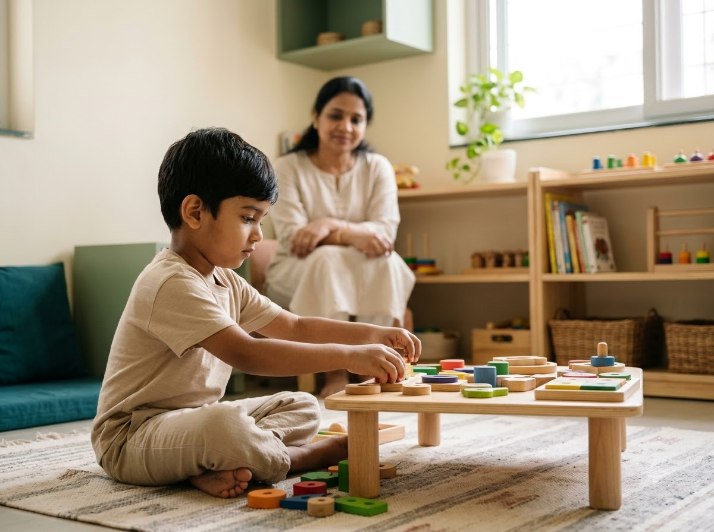
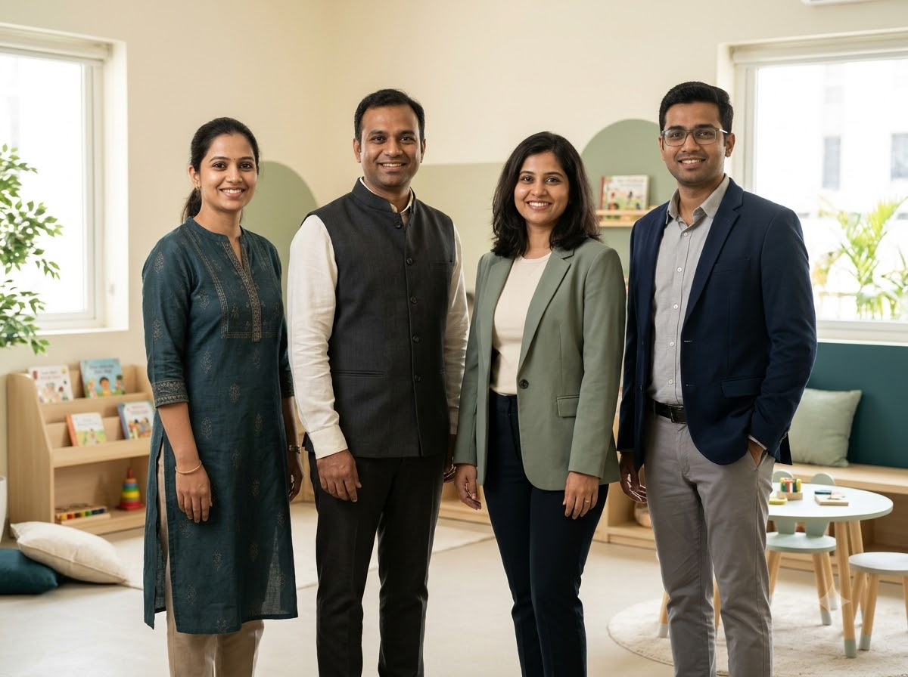

Communication
May have difficulty expressing needs, speaking, or understanding words and gestures.


Welcome to Carl Rogers Counselling and Therapy Centre, a dedicated space committed to supporting children and families through personalised counselling, therapy, and developmental care.
At CRCT, we believe every child has unique strengths and abilities. Our approach focuses on understanding individual needs, encouraging development, and empowering families through compassionate guidance and professional support.
Years of Experience
Children Supported
Qualified Professionals
Therapy & Support Services
Our dedicated team brings together professionals from different areas of child development and therapy. Working collaboratively, they aim to provide personalised support for every child and family.
Meet Our Team →
Every child is unique. Understanding autism helps us recognise individual strengths, understand different needs, and create opportunities for growth.

Autism is a condition that makes every child experience the world in their own way. It can affect how children speak, communicate, learn, play, and interact with others.
Every child with autism is different. Some children may need extra help with speaking or learning, while others may experience sounds, lights, or everyday activities differently.
With love, patience, the right support, and guidance, children with autism can learn new skills, grow with confidence, and enjoy everyday activities.
Talk to Our Experts →Every child is unique. Our evidence-based therapies focus on nurturing strengths, developing vital everyday skills, and supporting individual progress in a calm, encouraging setting.
Motor skills & daily independence
Emotional regulation & positive habits
Communication, clarity & expression
Sensory processing & balance
Personalized learning & guidance
Every child grows in their own way. Some children with autism may communicate, play, learn, or respond to everyday experiences differently.
Understanding these signs can help parents know when to seek guidance and support.
Talk to Our Team ↗May have difficulty expressing needs, speaking, or understanding words and gestures.
May find it difficult to interact, share interests, or connect with other children.
May repeat certain movements, words, or ways of playing.
May react differently to sounds, lights, textures, or everyday sensations.
May have strong interests in particular toys, activities, or subjects.
May prefer familiar routines and find unexpected changes difficult.
These signs are general observations, not a diagnosis. Not every autistic child shows the same signs. If you have concerns about your child's development, speak with a qualified professional.
A caring and dedicated team committed to supporting every child's growth, learning, and development.

Clinical Psychologist

Occupational Therapist

Speech Therapist

Behaviour Therapist
Read how personalized, compassionate therapy at CRCT has empowered children to communicate, build coordination, and thrive with everyday confidence.
“Before joining CRCT, our 5-year-old son Aarav struggled to express his needs and would become overwhelmed in noisy classrooms. The therapists here showed incredible warmth and patience. Within a few months, he began speaking in full sentences and now looks forward to attending his sessions every week.”
“Rohan found holding a pencil and writing very frustrating, often breaking down during homework. The occupational therapists at CRCT used playful exercises and fine motor games that made hand strengthening joyful. His school teachers have noticed a wonderful improvement in his handwriting and focus.”
“What truly sets CRCT apart is how actively they involve parents. They didn't just conduct sessions with Anvi; they taught us gentle home strategies for emotional regulation and morning transitions. The centre is peaceful, hygienic, and filled with genuine compassion for every child.”
Find clear, compassionate answers to the questions parents ask most when considering therapy and developmental support for their children.
Our therapists meet your child in a friendly, playful setting to understand their speech, movement, and daily habits. We then discuss simple, personalized next steps with you.
You don't need to decide in advance. Our team evaluates your child's strengths and suggests the right support—whether speech, motor skills, or behavioral guidance.
The earlier, the better. Early guidance between ages 2 and 7 helps children learn skills faster and gives parents quick peace of mind.
Yes, absolutely. Parents are always welcome. We also guide you with easy, fun activities to practice at home with your child.
Most children attend 2 to 3 sessions per week. We review your child's progress regularly and adjust the schedule to fit your family's routine.
Simply call us at +91 7416778925 or message us through our Contact page. We are open every day from Monday to Sunday.
Our compassionate team is always here to listen, answer questions, and help you take the right next step.